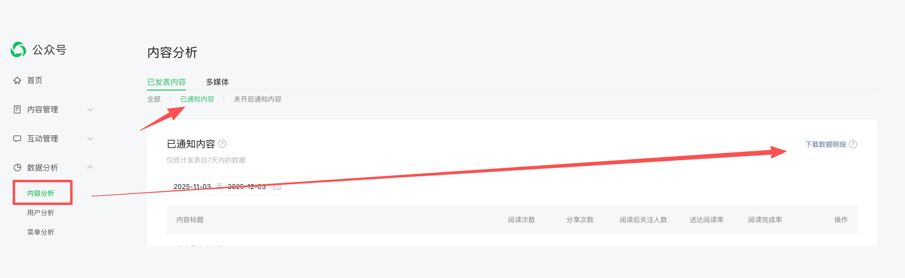

使用前请先点击右上角按钮导入公众号内容数据。
内容数据表现
多维度的阅读、分享、转化分析洞察
欢迎使用内容表现 Dashboard
本地浏览器运行，数据均在本地解析不上传。
不再提示
开始使用
Dashboard 使用指南
支持 CSV / XLSX，本地解析公众号内容维度数据
1. 数据获取
公众号后台 > 数据分析 > 内容分析 > 已通知内容 > 下载数据明细。

2. 功能概览
Summary: 核心指标概览
Top Chart: 阅读与分享分布
Quad Chart: 四象限内容诊断
Rankings: 11个维度的自动榜单
文章总数
-
总阅读次数
-
总阅读人数
-
总分享次数
-
总送达人数
-
平均送达阅读率
-
平均阅读完成率
-
二、Top 内容表现
Top10 内容（按总阅读次数）
阅读次数 vs 分享次数
三、转化与完成度
阅读完成率（Top50）
送达阅读率（Top50）
四、内容明细（Top100 按阅读次数）
内容明细表
五、关键指标 TOP 榜单
核心指标 Top3 榜单
六、阅读 × 总分享次数四象限分析
阅读量 vs 总分享次数（四象限）